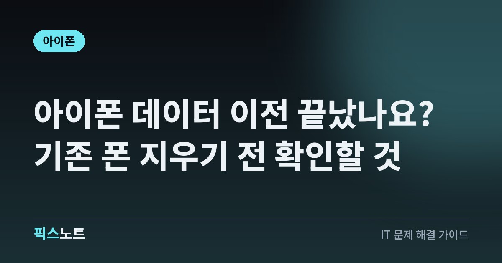

아이폰 데이터 이전 끝났나요? 기존 폰 지우기 전 확인할 것
새 아이폰으로 데이터를 옮길 때 백업과 빠른 시작을 준비하고, 기존 폰을 지우기 전에 사진·인증·통신 상태를 확인해요.

새 아이폰에 홈 화면이 나타나면 이전이 끝난 것 같지만 앱과 사진은 아직 내려받는 중일 수 있어요. 이때 기존 폰의 사진을 수동으로 지우면 iCloud에 연결된 다른 기기에서도 사라질 수 있어요. 백업부터 실제 데이터 확인, 기존 폰을 정리하는 순서까지 차례로 점검해요.
이전 완료 화면보다 실제 데이터를 먼저 확인해요
새 아이폰의 홈 화면이 나왔다고 모든 앱과 사진을 지금 바로 사용할 수 있는 것은 아니에요. Apple은 iCloud에서 내려받는 방식이면 앱과 데이터가 뒤에서 다운로드되고, 이전 기기에서 직접 전송하면 두 기기의 전송이 끝나야 사용할 수 있다고 구분해요. 어떤 방식을 골랐는지부터 확인해요. 앱 아이콘이 나타난 것과 내부 데이터가 준비된 것도 나눠 봐야 해요. 새 기기를 쓸 수 있게 되면 최근 사진과 연락처처럼 꼭 필요한 항목부터 직접 열어보세요. 기존 기기는 확인이 끝날 때까지 보관해요. 이 글은 이전 직전부터 판매 전까지 빠뜨리기 쉬운 확인 순서를 다뤄요. 특정 은행 앱이나 통신사의 재인증 방법은 서비스별 공식 안내를 따로 확인해야 해요.
백업 날짜와 컴퓨터 백업 암호를 준비해요
기기를 교체하기 전에 백업을 만들고 최근 데이터가 포함됐는지 확인해요. 컴퓨터 백업에서 복원할 때 Apple은 백업의 날짜와 크기를 보고 맞는 백업을 선택하라고 안내해요. 백업 파일이 하나 있다는 사실만으로 어제 찍은 사진까지 들어 있다고 생각하지 마세요. Finder, Apple 기기 앱 또는 iTunes로 백업한다면 암호화 여부도 확인해요. 암호화하지 않은 컴퓨터 백업으로는 건강 및 활동 데이터가 전송되지 않아요. 암호화된 백업을 복원할 때는 그 백업의 암호가 필요하니 사용할 수 있는지 먼저 확인해요. Face ID, Touch ID와 기기 암호 데이터는 암호화된 백업에도 포함되지 않으므로 새 기기에서 설정할 준비를 해요. 백업 암호를 문의 글이나 다른 사람에게 보내지는 마세요.
빠른 시작은 두 기기의 연결 조건을 맞춰요
빠른 시작 안내에 따라 기존 아이폰의 Wi-Fi와 Bluetooth를 확인하고 두 기기를 가까이 둬요. 기존 아이폰을 계속 써야 하는 시간보다는 두 기기를 잠시 쓰지 않아도 되는 때에 시작하는 편이 좋아요. 데이터 양과 네트워크 상태에 따라 걸리는 시간이 달라서 일정한 완료 시간을 보장할 수는 없어요.
- 기존 기기를 Wi-Fi에 연결하고 Bluetooth를 켠 뒤 잠금을 풀어 홈 화면으로 이동해요.
- 새 기기를 켜서 가까이에 놓고 화면 안내에 따라 설정을 시작해요.
- 전송 방법을 선택한 뒤 마이그레이션이 끝날 때까지 두 기기를 가까이 두고 전원에 연결해요.
기존 기기에서 새 기기를 설정하라는 메시지가 사라지면 Apple 안내대로 두 기기를 재시동해요. 전송이 진행 중일 때 기존 폰을 정리하려고 지우지는 마세요.
컴퓨터에서 복원한다면 지울 기기를 혼동하지 마세요
컴퓨터 백업을 새 기기로 복원하는 방식도 있어요. Apple은 새 기기를 이미 설정한 경우 백업을 전송하려면 해당 새 기기를 먼저 지워야 한다고 안내해요. 이때 지워지는 데이터가 무엇인지 확인하고, 새 기기에서 이미 만든 자료가 있다면 보전한 뒤 결정해야 해요. 기존 기기를 지우라는 설명으로 읽으면 안 돼요.
- 초기 설정 화면에서 Mac 또는 PC의 백업으로 복원하는 방식을 선택해요.
- 백업을 만든 컴퓨터에 새 기기를 연결하고 Finder, Apple 기기 앱 또는 iTunes에서 선택해요.
- 백업 복원에서 날짜와 크기를 확인하고, 암호화된 백업이면 백업 암호를 입력해요.
복원과 나머지 설정이 끝난 뒤에도 Wi-Fi와 전원에 연결해 콘텐츠 다운로드를 이어가요. 어떤 폰을 연결했는지 기기 이름도 다시 확인해요.
사진·연락처·메일은 앱 안에서 열어봐요
Apple의 설정 완료 안내는 연락처와 캘린더가 전송됐는지 각각 앱에서 확인하도록 설명해요. Mail 앱은 이메일이 내려받아질 때까지 기다리고 필요하면 암호를 다시 입력해요. 이런 확인을 건너뛰고 앱 아이콘 개수만 비교하면 누락을 놓칠 수 있어요. 최근 사진뿐 아니라 중요한 예전 사진과 동영상, 연락처 몇 개, 가까운 일정도 열어보세요. 확인할 항목을 짧게 적어 하나씩 체크하는 방식이면 충분해요. 내려받기나 동기화가 진행 중인지 살핀 뒤 빠진 자료를 판단해요. 새 폰에서 보이지 않는다고 기존 폰의 원본부터 삭제하거나 백업을 지우지는 마세요. 특정 앱의 문서나 대화 기록이 중요하다면 그 앱의 데이터 이전 안내도 별도로 확인해요. 전체 백업 하나가 모든 서비스의 확인을 대신해 주지는 않아요.
로그인·통신·시계도 새 폰에서 확인해요
이메일과 연락처를 확인했다면 평소 사용하는 계정에도 새 아이폰에서 접근할 수 있는지 살펴요. 인증 앱, 비밀번호 관리자, 은행·증권·신분증 앱은 여기서 일괄 이전됐다고 가정하지 말고 각 서비스 안내에 따라 확인해요. 모든 앱에 같은 재등록 조건이 있다고 단정할 수는 없어요. 전화번호를 바꿀 계획이라면 Apple 계정의 신뢰하는 전화번호도 점검해요. 통화와 문자, 모바일 데이터가 새 기기에서 되는지 직접 확인한 뒤 기존 회선을 정리할 순서를 통신사에 확인해요. Apple Watch를 쓰면 새 아이폰과의 연결도 확인하고, 기존 아이폰을 판매하기 전에는 Apple의 안내에 맞춰 페어링 해제 절차를 챙겨요. 이어폰이나 차량처럼 자주 쓰는 연결도 여유가 있을 때 한 번씩 시험해 두세요.
iCloud 사진을 수동 삭제해서 판매 준비하지 마세요
기존 폰에 사진이 남아 있다는 이유로 사진 앱에서 하나씩 지우는 방식은 피해야 해요. Apple은 iCloud에 로그인한 상태에서 사진·연락처·문서 등을 수동 삭제하면 iCloud 서버와 연결된 기기에서도 영구적으로 제거된다고 경고해요. 새 폰으로 옮겼으니 기존 폰에서 지워도 괜찮다고 생각하면 원치 않는 삭제가 생길 수 있어요. 판매 전에는 필요한 데이터를 확인한 뒤 Apple의 기기 정리 절차를 따라야 해요. 로그아웃과 기기 지우기 화면은 iOS 버전에 따라 다를 수 있으므로 지금 화면과 공식 안내의 버전 조건을 맞춰 봐요.
확인을 마쳤을 때만 기존 기기를 지워요
기존 아이폰을 판매하거나 반납할 때는 백업, 새 기기 이전, 개인정보 제거 순서를 지켜요. Apple Watch를 연결했다면 페어링 해제를 챙기고, 사용 중인 iOS에 맞는 Apple 계정 로그아웃과 기기 지우기 안내를 따라요. 이 과정에는 계정 암호나 기기 암호가 필요할 수 있으니 본인이 직접 입력해요. eSIM을 쓰는 경우에도 새 폰에서 회선이 되는지와 통신사의 정리 안내를 확인한 뒤 진행해요. 아직 안 옮겨진 자료나 접근할 수 없는 계정이 있으면 판매를 서두르지 마세요. 전송이 계속 실패하면 기존·새 기기의 모델, iOS 버전, 사용한 전송 방식, 멈춘 화면과 오류 문구를 준비해 Apple 지원에 문의해요. 어느 기기에 원본이 남아 있는지 명확히 적고 원본을 보전한 상태에서 다음 절차를 확인해요.
자주 묻는 질문
아이폰 빠른 시작이 끝나면 기존 폰을 바로 초기화해도 되나요?
새 기기에서 사진과 연락처, 필요한 앱의 데이터와 로그인을 확인한 뒤 결정해요. iCloud 다운로드 방식은 앱과 데이터가 뒤에서 내려받아질 수 있으므로 홈 화면이 보인다는 사실만으로 확인을 끝내지 마세요.
기존 아이폰의 사진을 지우면 새 아이폰에서도 없어지나요?
iCloud에 로그인한 상태에서 동기화 중인 사진을 수동 삭제하면 연결된 기기에서도 삭제될 수 있어요. 판매 준비라면 사진을 하나씩 지우는 대신 데이터 확인 후 Apple의 로그아웃과 기기 지우기 절차를 따라요.
컴퓨터 백업으로 건강 데이터까지 옮기려면 어떻게 하나요?
Apple은 암호화하지 않은 컴퓨터 백업으로는 건강 및 활동 데이터가 전송되지 않는다고 안내해요. 백업 전에 로컬 백업 암호화 여부를 확인하고 복원할 때 필요한 백업 암호도 안전하게 보관해요.
아이폰을 옮겼는데 은행 앱과 인증 앱도 다 옮겨졌나요?
앱이 보인다는 사실만으로 서비스 이용 준비가 끝났다고 판단하지 마세요. 새 기기에서 직접 열어 로그인과 인증 수단을 확인하고, 추가 절차가 있다면 해당 은행이나 앱의 공식 이전 안내를 따라요.